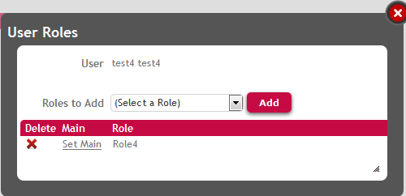

Permissions Over a User Action in SD Objects
PurposeRegarding the Smart Devices Architecture, actions programmed by GeneXus users are translated into REST calls in general. The procedures called inside user actions are automatically set as REST Web Services. In this paper, we show how to manage permissions taking this fact into account. We also show how to group permissions to make the permissions management easier. Problem descriptionIn case you program a call to a procedure from an Panel object, Menu for Smart Devices object (GeneXus 16), or Work With for Smart Devices object the procedure is automatically set as a REST. Suppose in this case that you have a Panel object which lists all the "Literary Styles" an editorial works with, so the SD panel layout consists on a grid where the "Literary Styles" are loaded using a Data Provider object programmed by the GeneXus user. Figure 1. SD panel which loads data using a Data ProviderIn the SD panel grid we have an action where the user can subscribe to receive any news about the selected "Literary Style", so the grid has an action in each line, and the SD Panel´s complete code is as follows: Figure 2. SD panel which includes an action in each line of the grid, and the code associated with itNote: 1. The procedure "SubscribetoNovels" is exposed as rest web service automatically, when you specify the SD panel object. See the properties of the procedure in the following figure. Figure 3. REST Procedure properties2. The Data Provider used to load the grid with the "Literary Styles" is not set automatically as REST, and doesn´t need to be exposed as it. The difference is that the Data Provider is called from a server-side event, and the procedure is not. See Start and Load Events in Smart Devices for details. Solution to the problem exposedThe goal is to make these objects (SD panel and procedure) private and make GAM check that the final user has permissions to execute them, so follow these steps: 2. Regarding the Permission Prefix of the SD panel (figure 1) configure a role that includes this permission prefix with the desired Permission Access Type. Figure 4. Permissions of the roleAny user which has this role (figure 5), will have access rights to execute the SD panel as well to execute the action "Subscribe".  Figure 5. Role of the userNote: 1. The permission associated to the Rest web service is called by default <permission_prefix>_services_execute. See Automatic Permissions generated by GeneXus for details. 2. You can combine the Permission Access Type of the permissions in order to allow or deny the execution of the action. How to make the management easierIf you want to manage both objects as a whole, that is that if a user is allowed to execute the list he will also be allowed to execute the action, you can manage both permissions at the same time, in the following way: 1. Define a custom permission named "mypermissionsubscrip" for instance, where their children must be the following permissions: - SubscribeNovel_execute The permission has to be defined for the SD application (the permissions are defined for each Application). See the figure below: Figure 6. Create custom permission at the application level2. Add the corresponding permissions (SubscribeNovel_execute and SubscribeToNovels_services_execute) as children of the custom permission "mypermissionsubscrip".
|

| Backlinks |
| GAM Authorization Scenarios |